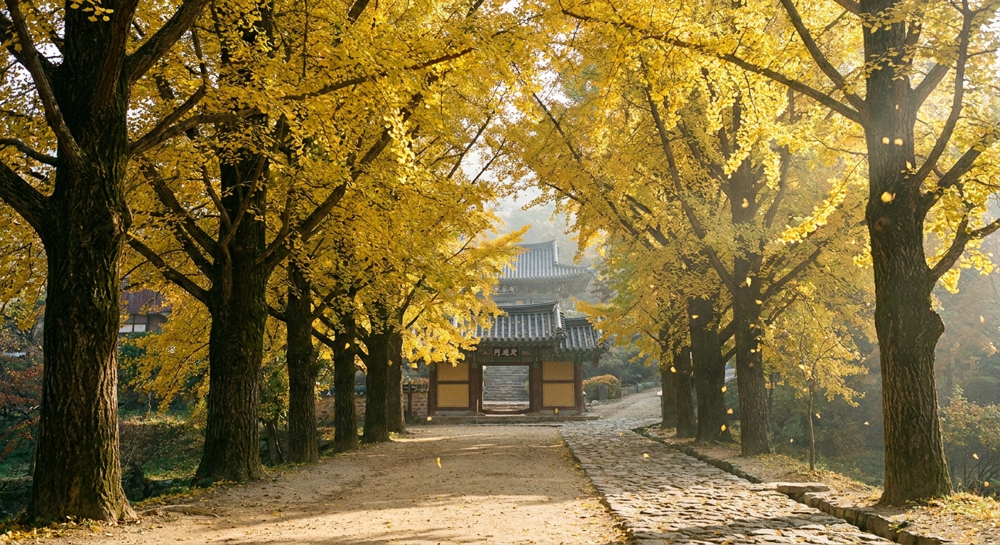
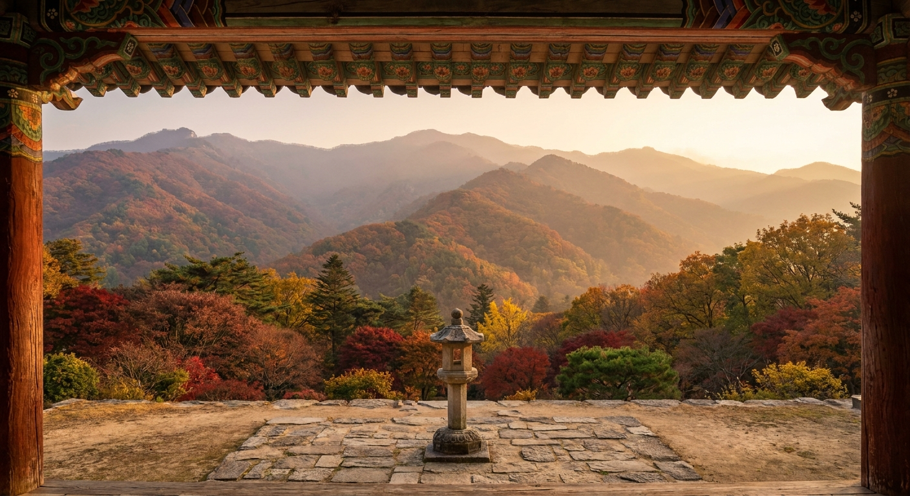
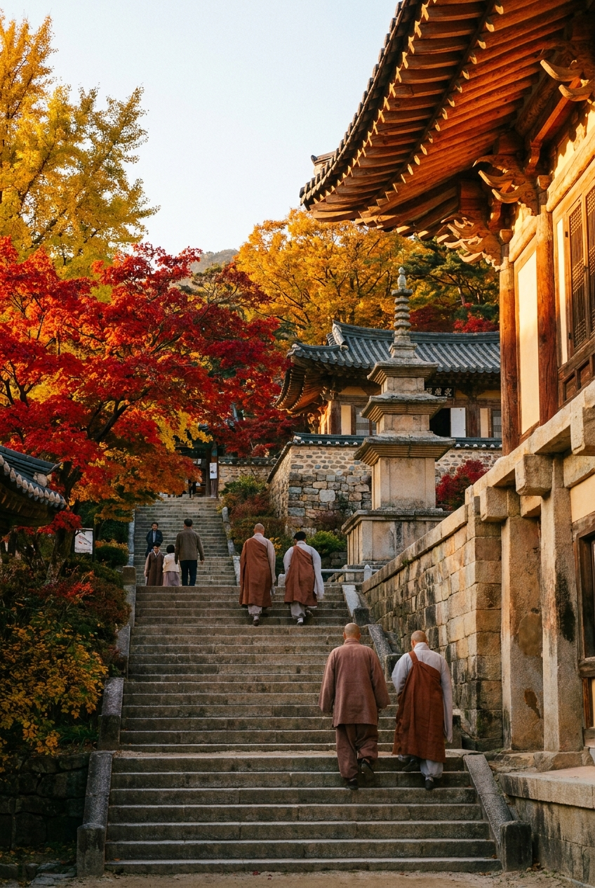

영주 부석사 가을 은행나무길 언제 절정인가 — 일주문 노란 터널과 무량수전 안양루 단풍 코스
경북 영주 봉황산 자락에 자리한 천년고찰 부석사는 일주문에서 천왕문까지 이어지는 500미터 은행나무 노란 터널과 국보 무량수전 앞 안양루에서 내려다보는 소백산 단풍 물결로 대한민국 가을 사찰의 백미로 손꼽힙니다.
2026년 부석사 은행나무와 경내 단풍의 공식 절정기는 10월 26일경부터 11월 3일 무렵까지 이어질 전망이며, 고도가 높은 소백산 능선의 오색 단풍과 산자락의 황금빛 은행나무가 완벽한 조화를 이룹니다.
문화재 관람료 폐지로 무료 입장이 가능하며, 아침 햇살이 비스듬히 은행나무 숲을 투과하는 오전 9시~11시 사이에 방문해야 황금빛 융단길의 진면목을 마주할 수 있습니다.

일주문에서 천왕문으로 이어지는 영주 부석사의 찬란한 황금빛 은행나무 터널 / AI 제작 이미지
01 | 유네스코 세계유산 부석사의 가을 정취와 지형적 매력
신라 문무왕 16년(676년) 의상대사가 창건한 영주 부석사는 한국 화엄종의 근본 도량이자 유네스코 세계문화유산에 등재된 유서 깊은 사찰입니다.
부석사의 건축미는 가파른 산비탈을 깎아 9단 석축을 쌓아 올린 구조에서 극대화됩니다. 일주문을 지나 천왕문, 범종각, 안양루를 거쳐 무량수전에 이르는 동선은 마치 속세에서 피안의 세계로 한 걸음씩 올라서는 듯한 극적인 종교적 체험을 선사합니다.
특히 가을이 찾아오면 초입의 은행나무길이 노랗게 물들고, 위로 올라갈수록 당간지주 주변과 석축 사이사이에 붉은 단풍나무가 어우러져 노란색과 붉은색의 대비가 감탄을 자아냅니다.
02 | 2026년 영주 부석사 단풍 및 은행나무 절정 예측
소백산맥의 고원 분지에 위치한 영주 지역은 내륙성 기후의 특성상 일교차가 커서 단풍의 빛깔이 유난히 선명하고 맑은 편입니다.
올해 2026년 부석사의 단풍 진행은 10월 중순 봉황산 정상부부터 붉게 물들기 시작하여, 10월 넷째 주 주말(10월 25~26일)을 기점으로 일주문 진입로 은행나무가 황금색으로 급격히 전환될 것으로 보입니다.
나무에 달린 풍성한 잎과 바닥에 수북이 쌓인 은행잎 카펫을 동시에 즐길 수 있는 골든타임은 10월 28일부터 11월 4일 사이입니다. 11월 둘째 주에 접어들면 산바람에 잎이 떨어져 앙상해지므로 10월 말 방문 일정을 서두르시는 것이 좋습니다.
| 구간 및 구역 |
단풍 수종 |
2026년 절정 시기 |
핵심 풍경 포인트 |
| 일주문 ~ 천왕문 |
수령 수십 년 은행나무 가로수 |
10월 28일 ~ 11월 4일 |
완만한 흙길 위를 덮는 노란 터널과 발밑의 황금 융단 |
| 천왕문 ~ 범종각 석축 |
토종 단풍나무, 팽나무, 감나무 |
10월 24일 ~ 10월 31일 |
웅장한 신라 석축과 붉은 단풍잎, 주황빛 감의 조화 |
| 안양루 ~ 무량수전 앞마당 |
사찰 주변 숲 및 소백산 조망 |
10월 22일 ~ 10월 30일 |
안양루 난간 너머로 끝없이 펼쳐지는 소백산맥 오색 연봉 |
| 조사당 ~ 삼층석탑 뒷길 |
산단풍 군락 및 참나무 |
10월 20일 ~ 10월 28일 |
조용한 산사 숲길과 고즈넉한 단풍 산책로 |
03 | 일주문 은행나무길 걷는 요령과 힐링 산책법
주차장에서 매표소 옛 터를 지나 일주문에 들어서면 시선 가득 노란빛의 향연이 펼쳐집니다. 약 500미터가량 이어지는 이 길은 사과 과수원과 숲길 사이에 자리 잡고 있습니다.
길의 경사가 매우 완만하여 남녀노소 누구나 걷기 편하며, 바닥은 포장도로가 아닌 자연 흙길과 박석으로 다져져 있어 밟는 감촉이 부드럽습니다.
가을 단풍철에는 수많은 탐방객이 몰리지만, 오전 8시 30분~9시경 이른 시각에 걸으면 사찰 스피커에서 흘러나오는 은은한 예불 소리와 바람에 은행잎 사각거리는 소리만이 가득한 명상의 시간을 가질 수 있습니다.
💡 부석사 은행나무길 사진 촬영 비법
- 사과나무 배경 활용: 은행나무길 양옆으로 붉게 익은 영주 사과 과수원이 펼쳐집니다. 노란 은행잎과 붉은 사과를 한 화각에 걸쳐 담으면 영주 가을 특유의 정취가 배가됩니다.
- 역광 빛내림 포착: 오전 9시 30분경 나뭇가지 사이로 쏟아지는 아침 틴들 현상(빛내림)을 카메라 조리개를 조여(f/8 이상) 담아보세요.

부석사 안양루 누각 아래에서 바라본 소백산 능선의 장엄한 가을 단풍 파노라마 / AI 제작 이미지
04 | 안양루 누하진입과 무량수전 배흘림기둥의 감동
천왕문을 통과해 세 번의 거대한 석축 계단을 오르면 2층 누각인 안양루(安養樓)가 눈앞을 가로막습니다. 안양루 아래 좁은 계단을 고개 숙여 통과하는 순간, 눈앞이 환하게 트이며 국보 무량수전(無量壽殿)이 웅장한 자태를 드러냅니다.
이것이 바로 한국 전통 건축의 백미라 불리는 '누하진입(樓下進入)' 구조입니다. 어둠을 뚫고 빛의 공간이자 극락세계를 상징하는 무량수전 앞마당에 닿는 감동은 사계절 중 가을에 가장 벅차오릅니다.
무량수전 마당에 서서 뒤를 돌아 안양루 너머를 바라보세요. 유홍준 교수가 《나의 문화유산답사기》에서 "태백산맥과 소백산맥 연봉들이 파도처럼 밀려오는 장엄한 풍경"이라 극찬했던 파노라마 단풍 능선이 발아래로 시원하게 펼쳐집니다.
05 | 클릭 설계 체크리스트: 부석사 관람 동선과 소요 시간 비교
부석사 경내는 오르막과 계단이 이어지므로 체력과 일정에 맞춘 동선 선택이 필수적입니다. 아래 표를 확인하여 가장 알맞은 코스를 선택해 보세요.
| 코스 유형 |
상세 동선 및 경유지 |
소요 시간 |
난이도 및 특징 |
| 핵심 힐링 코스 |
주차장 → 일주문 은행나무길 → 천왕문 → 안양루 → 무량수전 앞마당 → 원점회귀 |
약 1시간 30분 |
초급 (완만함) / 주요 단풍 명소와 국보 건축 관람 집중 |
| 역사 심층 코스 |
핵심 코스 + 무량수전 뒤 뜬돌(부석) → 삼층석탑 → 조사당(선비화) → 자인당 |
약 2시간 30분 |
중급 (계단 다수) / 의상대사와 선묘낭자 전설 유적 탐방 |
| 봉황산 숲길 코스 |
역사 코스 + 조사당 뒷길 봉황산 등산로(약 1.5km 능선 산책) |
약 3시간 30분 |
중상급 / 호젓한 참나무·산단풍 숲길 트레킹 병행 |
📋 부석사 관람 필수 체크리스트
- [ ] 신발 선택: 석축 돌계단과 박석이 이어지므로 미끄럼 방지가 되는 운동화나 트레킹화 착용
- [ ] 무량수전 내부 배례: 아미타여래좌상이 건물의 측면에 봉안된 독특한 구조 확인하기
- [ ] 조사당 선비화 관람: 의상대사가 꽂아둔 지팡이에서 싹이 텄다는 골담초(선비화) 관찰
- [ ] 오후 일몰 시간 확인: 안양루에서 감상하는 소백산 단풍 너머 붉은 낙조 시간(17시 30분경) 체크
06 | 주차 요령과 대중교통 이용 안내
부석사 입구에는 대규모 공영주차장이 마련되어 있어 편리하게 이용하실 수 있습니다.
주차 요금은 승용차 기준 무료로 개방되거나 성수기 정액제로 매우 저렴하게 운영됩니다. 단풍 피크철 주말에는 대형 관광버스와 나들이 차량이 몰려 오전 10시 이후 진입로가 정체될 수 있으므로 주차장 초입의 안내 요원 수신호를 잘 확인하셔야 합니다.
대중교통을 이용하실 경우 KTX-이음이 정차하는 풍기역이나 영주역에서 부석사행 시내버스(27번, 55번 등)가 약 40분~1시간 간격으로 운행됩니다. 풍기역에서 출발하면 약 35분, 영주터미널에서는 약 50분이 소요됩니다.

고풍스러운 석탑과 전통 전각 사이로 붉게 물든 부석사 경내 단풍 정취 / AI 제작 이미지
07 | 영주 당일치기 가을 여행 코스 비교
부석사를 둘러본 뒤 함께 연계하기 좋은 영주의 대표 명소들을 테마별로 정리했습니다.
| 테마 코스 |
주요 경유지 |
특징 및 매력 포인트 |
소요 시간 |
| 유교 역사 코스 |
부석사 → 소수서원·선비촌 → 금성단 |
우리나라 최초의 사액서원과 고택 마을, 학자들의 숲길 산책 |
당일 6~7시간 |
| 자연·인생샷 코스 |
부석사 → 무섬마을 외나무다리 → 풍기 온천 |
내성천 물돌이 마을의 정겨운 외나무다리 단풍 풍경과 온천 휴식 |
당일 6시간 |
| 미식·힐링 코스 |
부석사 → 풍기인삼시장 → 정도너츠 본점 → 영주 전통시장 |
가을 제철 햇수삼 쇼핑과 지역 명물 생강도너츠, 묵밥 맛기행 |
당일 5시간 |
08 | 영주 향토 먹거리와 가을 제철 특산물
부석사 주변 식당가와 영주시내에서는 가을철 입맛을 돋우는 특색 있는 음식들을 맛볼 수 있습니다.
첫 번째 추천 메뉴는 영주 청국장과 묵밥입니다. 소백산 청정 콩으로 띄운 구수한 청국장 찌개와 시원한 메밀묵밥은 자극적이지 않고 소화가 잘되어 산사 탐방 후 최적의 식사입니다. 1만 원 안팎의 합리적인 가격대로 푸짐한 나물 반찬과 함께 제공됩니다.
두 번째는 풍기 인삼 갈비탕과 영주 한우입니다. 가을 환절기 원기 회복에 좋은 풍기 인삼이 통째로 들어간 갈비탕이나 불고기는 남녀노소 모두에게 인기입니다. 또한 사찰 입구 도로변에서 농민들이 직접 수확해 판매하는 영주 부석 사과는 당도가 높아 가을 나들이 선물용으로 제격입니다.
09 | 부석사 방문 전 알아두면 유용한 FAQ
Q1. 부석사 입장료가 정말 무료인가요?
A1. 문화재보호법 개정으로 2023년 5월부터 문화재 관람료가 전면 폐지되어 입장료는 무료입니다. 매표 절차 없이 바로 입장하시면 됩니다.
Q2. 유모차나 휠체어로 일주문 은행나무길 이동이 가능한가요?
A2. 일주문에서 천왕문 직전까지의 은행나무 흙길은 완만하여 유모차 이동이 가능합니다. 다만 천왕문 이후 안양루와 무량수전 구간은 가파른 돌계단이 많아 휠체어 진입이 어렵습니다.
Q3. 주변에 사과 축제 일정이 겹치나요?
A3. 매년 10월 하순에는 부석사 주차장 및 영주 일원에서 '영주장날 농특산물 대축제' 및 사과 홍보 행사가 함께 열려 시식과 저렴한 농산물 구매가 가능합니다.
#영주부석사
#부석사은행나무길
#부석사단풍절정시기
#영주가을여행
#무량수전안양루
#소백산단풍전망
#유네스코세계유산
#영주가볼만한곳
#소수서원연계
#가을사찰여행